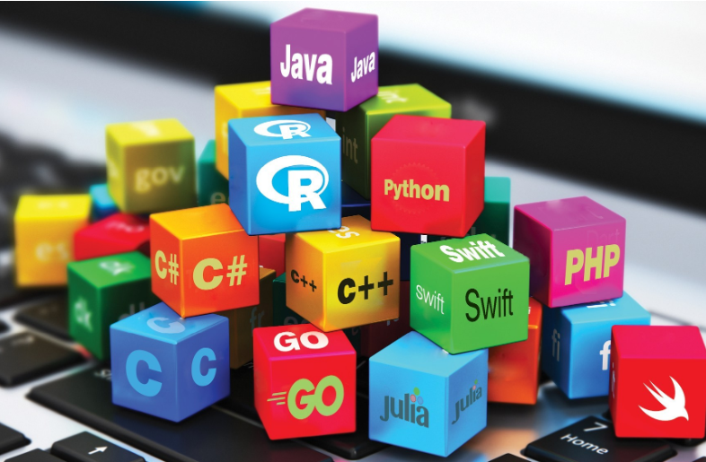

Best Programming Languages
A programming language is a formal language comprising a set of instructions that produce various kinds of output. Programming languages are used in computer programming to implement algorithms. Most programming languages consist of instructions for computers. There are programmable machines that use a set of specific instructions, rather than general programming languages. Early ones preceded the invention of the digital computer, the first probably being the automatic flute player described in the 9th century by the brothers Musa in Baghdad, during the Islamic Golden Age.[1] Since the early 1800s, programs have been used to direct the behavior of machines such as Jacquard looms, music boxes and player pianos.[2] The programs for these machines (such as a player piano's scrolls) did not produce different behavior in response to different inputs or conditions. Thousands of different programming languages have been created, and more are being created every year. Many programming languages are written in an imperative form (i.e., as a sequence of operations to perform) while other languages use the declarative form (i.e. the desired result is specified, not how to achieve it).